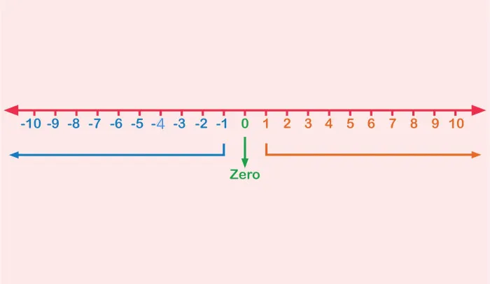

Números Inteiros
O conjunto dos números inteiros, representado por ℤ, inclui todos os números naturais, seus opostos (números negativos) e o zero: ℤ = {..., ‑3, ‑2, ‑1, 0, 1, 2, 3, ...}
Esse conjunto é infinito, tanto para os valores positivos quanto negativos, e permite sempre identificar um sucessor e um antecessor para cada número.
